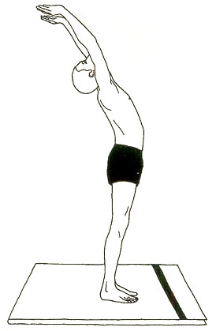
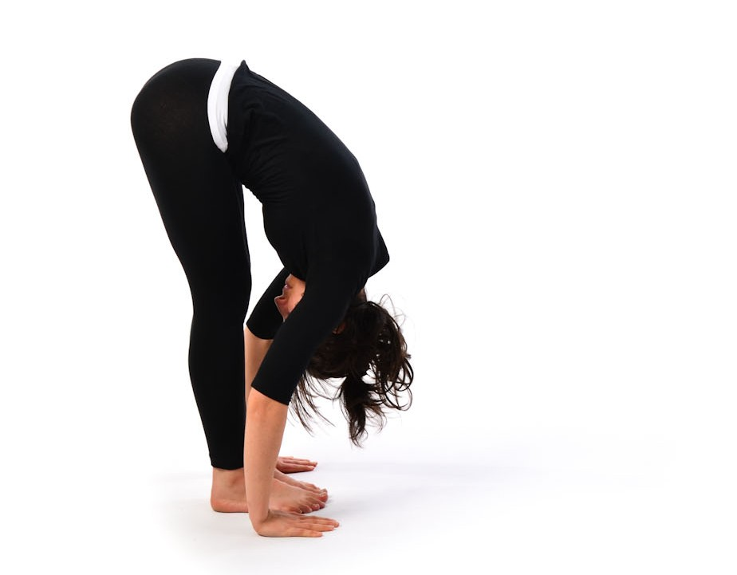
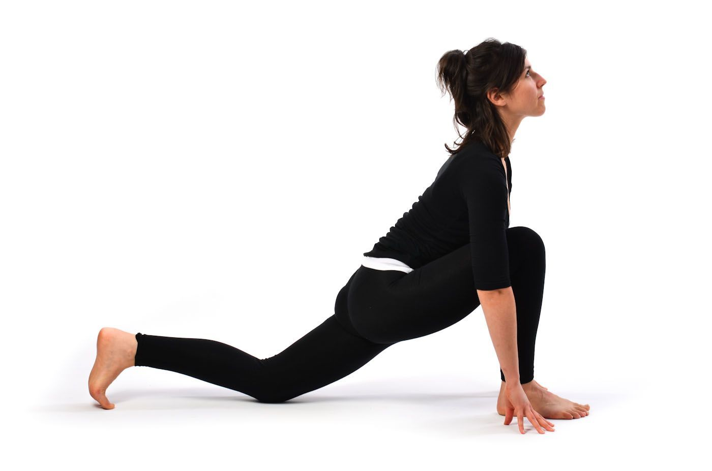
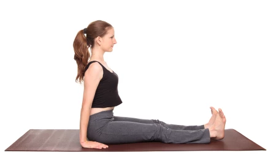
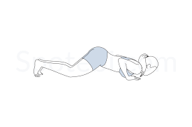
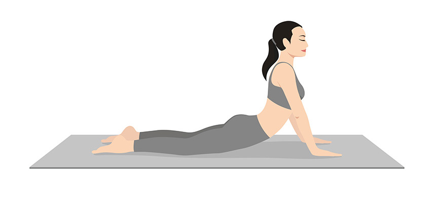
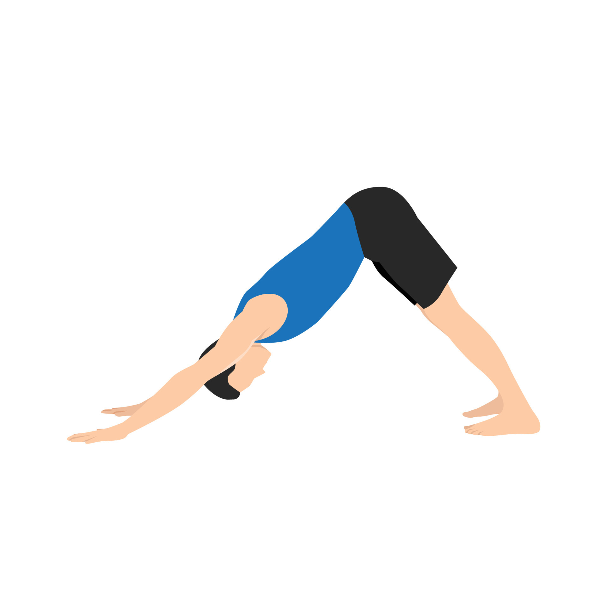

Sun Salutation Sequence
Surya Namaskar, or Sun Salutation, is a sequence of 12 powerful yoga poses. It provides a great cardiovascular workout, while also stretching and toning the muscles. Here are the steps involved:
Pose 1: Pranamasana (Prayer Pose)

Stand at the edge of your mat, keep your feet together, and balance your weight equally on both feet. Expand your chest and relax your shoulders. As you breathe in, lift both your arms up from the sides, and as you exhale, bring your palms together in front of your chest in prayer position.
Pose 2: Hastauttanasana (Raised Arms Pose)
With a deep inhalation, raise your arms upwards and backwards, keeping the biceps close to the ears. Try to stretch the whole body backward while keeping the feet grounded.
Pose 3: Hasta Padasana (Hand to Foot Pose)
Exhale and bend forward from the waist while keeping the spine erect. As you exhale completely, bring your hands down to the floor beside your feet.
Pose 4: Ashwa Sanchalanasana (Equestrian Pose)
Inhale and push your right leg back as far as possible. Bring the right knee to the floor and look up. Keep your left foot between the palms.
Pose 5: Dandasana (Stick Pose)
As you breathe in, take the left leg back and bring the whole body in a straight line. Keep your arms perpendicular to the floor.
Pose 6: Ashtanga Namaskara (Salute with Eight Parts or Points)
Exhale and bring your knees down to the floor. Slightly touch your chest and chin to the floor while raising your hips slightly off the floor. The eight parts of the body that touch the floor in this position are your chest, chin, two hands, two knees, and two feet.
Pose 7: Bhujangasana (Cobra Pose)
Slide forward and raise the chest up into the Cobra Pose. You may keep your elbows bent in this pose, with the shoulders away from the ears. Look up.
Pose 8: Adho Mukha Svanasana (Downward Facing Dog Pose)
Exhale and lift your hips, moving your head downward into the Downward Dog Pose. Keep your heels on the ground.
Pose 9: Ashwa Sanchalanasana (Equestrian Pose)
Inhale and bring your right foot forward between your hands. The left knee goes down to the floor. Press the hips down and look up. Repeat for the other side.
Pose 10: Hasta Padasana (Hand to Foot Pose)
Exhale and bring your left foot forward. Keep your palms on the floor. You may bend your knees if necessary.
Pose 11: Hastauttanasana (Raised Arms Pose)
Inhale and lift your arms up and back, keeping the biceps close to your ears. Stretch your whole body backward.
Pose 12: Tadasana (Mountain Pose)

Exhale and straighten the body, bringing the arms down. Stand tall with feet together and relax.